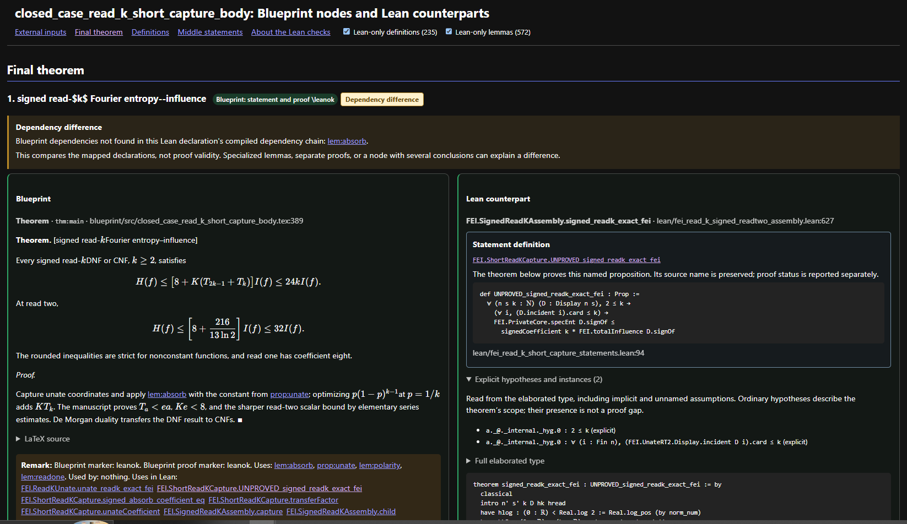

BLUEPRINT ⇄ LEAN
Every Blueprint statement beside its Lean proof, and what that proof rests on.
lean-dump turns a leanblueprint .tex into one HTML page. Each node’s typeset statement and proof sits beside the Lean declaration that formalises it. The page states which claims are proved unconditionally, which rest on sorry, an axiom or an unproved hypothesis, and where the Blueprint and Lean disagree.

Contents
- How it works
- What a page shows
- Verifications
- Usage and options
- Inputs
- Setting up a project
- Conventions
- What it does not claim
How it works
Lean runs once, in an audit step whose results are saved as JSON with source hashes. The page generator is pure Python: it reads the Blueprint, the Lean sources as text and the saved audit, and never invokes Lean. A page can therefore be regenerated in seconds, and it states plainly when the evidence it is built on is out of date.
run_lean_audit.py runs lake build and then the exporter. For every project declaration it collects the transitive axioms, the provenance-prefixed hypotheses, the elaborated binders and the compiled dependencies.
lean/axiom_footprint.json, declaration_details.json, .meta.json (hashes written last)The generator parses every labelled environment, with its \lean, \leanok/\notready (statement and proof), \uses and \literature. An optional ledger JSON can override or annotate any node.
blueprint.tex, ledger.jsonLean sources are scanned as text for declarations, namespaces and references. Every name is resolved, the static checks run, nodes are grouped and put in dependency order, and the saved audit is matched against the current source hashes.
←lean/**/*.lean, saved auditThe output is a single HTML file. In the browser, statements are typeset by KaTeX with the Blueprint’s own preamble macros (through gh-tex-viewer’s render.js). Errors are printed and set the exit code.
blueprint_with_lean.htmlTwo kinds of evidence, kept apart. Static checks, such as whether names resolve, the markers agree and \literature is present, are recomputed on every run. Audit-backed checks, such as axioms, hypotheses and dependency consistency, are only as current as the saved audit. When the hashes no longer match the working tree, those checks are reported as stale or unchecked, and never as clean.
What a page shows
Side-by-side cards
Each Blueprint node is shown typeset, with a LaTeX source toggle and its file and line. Beside it is the Lean declaration’s source with file and line. Trailing #print diagnostics are trimmed from the snippet; docstrings are kept.
Ordered by the proof
The sections are: External inputs → Final theorem → Definitions → Middle statements → Not used by the final theorem. Statements appear bottom-up from \uses, each after everything it uses. A \uses cycle is an error.
Named propositions unfolded
A theorem stated as thm : UNPROVED_x gets a Statement definition block with the proposition’s source. The Full elaborated type inspector shows Lean’s unfolded type, quantifiers included.
Explicit hypotheses
A panel lists every binder from the elaborated type: unnamed arrows, implicit and instance arguments, and section variables. Each is marked explicit, implicit or instance, and flagged when it is a proposition.
External inputs found in Lean
Besides the Blueprint’s own external nodes, the page lists every EXT_ declaration that the page’s Lean code reaches, even when no Blueprint node names it. EXT_ aliases are not counted as inputs.
Lean-only definitions and lemmas
The page also cards the definitions and lemmas that its declarations reach but the Blueprint never mentions. Header checkboxes hide or show them. --no-lean-defs / --no-lean-lemmas leave them out entirely, which matters because they can add megabytes.
Links both ways
Every card lists Uses / Used by from the Blueprint and Uses in Lean / Used in Lean by from Lean references. Labels and qualified Lean names in remarks link to their cards.
Status at a glance
The header gives the node counts per section, the number of unresolved names, the number of conditional statements and the externals missing a reference. A one-line proof summary for the final theorem appears only when every check behind it passes.
Curated remarks
A ledger can attach a status, a remark and a lean_statement to any node, for example to name the extra declarations behind a node with several conclusions.
Verifications
Everything the page asserts comes from one of the checks below. fatal stops generation. ERROR marks the card and makes the run exit nonzero unless --allow-page-errors is given. INCOMPLETE, CONDITIONAL and NOT CHECKED are shown on the page and in the summary. The full guide to the page banners is How to read a page.
Static checks, every run, no Lean needed
| Check | What it catches | Result |
|---|---|---|
| Lean name resolves | A \lean{} or ledger name that is not a single identifier, or that is declared nowhere under --lean-dir. This is a textual scan of declarations and namespaces, so typos and wrong namespaces are caught without compiling. | fatal if the node is \leanok, else ERROR |
| One declaration per node | A node with several \lean{} macros; the extra names belong in the ledger’s lean_statement. | fatal |
| Claim with no counterpart | A \leanok node, or a ledger "status": "full", that names no Lean declaration. It would otherwise show green with nothing behind it. | fatal |
| Statement marker | A node with \notready, or with no \leanok on its statement. | ERROR / INCOMPLETE |
| Proof marker | A theorem, lemma, proposition or corollary whose proof is not \leanok: it is \notready, unmarked, or missing. | ERROR / INCOMPLETE |
| Final theorem Lean-ready | The configured final theorem lacks a resolved declaration, a statement \leanok or a proof \leanok. | ERROR, nonzero exit |
| Literature locator | An external input without \literature{reference}{locator}. | flagged on the card and counted |
| Dependency order | A \uses cycle, or --final naming a label that does not exist. | fatal |
| Typesetting | Math that KaTeX cannot render is shown as source in amber, and the header counts it. If the CDN is unreachable, every statement falls back to source. | shown in the page |
Audit-backed checks, from the saved Lean audit
| Check | What it catches | Result |
|---|---|---|
| Freshness | The SHA-256 of the Lean sources, scripts/*.lean, toolchain, lakefile, manifest, axiom_clean.txt and the audit code, compared with the working tree. Installed dependency checkouts are checked against their locked revisions. | current / stale / unknown |
| Axioms | The proof transitively reaches sorryAx or a project axiom. Only propext, Classical.choice and Quot.sound are allowed. | CONDITIONAL |
| Conditional statement | A hypothesis binder mentions a CONJ_, UNPROVED or EXT_ name. The conclusion is not scanned, so a theorem that proves UNPROVED_x is not marked conditional on it. | CONDITIONAL |
| Footprint coverage | The footprint is missing, or older than a declaration on the page. A missing audit is never treated as clean. | NOT CHECKED |
| Blueprint consistency | The \uses paths among mapped nodes, compared with Lean’s compiled type and proof references. Project helpers are followed, compiler-generated ones are expanded, and library internals are not. Differences are reported in both directions. | Dependency difference |
| Proof summary | “Fully proven from Lean’s standard axioms … sorry-free” is printed only when the audit is current, covers the final theorem, finds no non-standard axiom or flagged hypothesis, and statement and proof are both \leanok. | summary or nothing |
Checks the audit run itself enforces
| Check | What it catches | Result |
|---|---|---|
| Sorry confinement | A sorryAx written directly in a declaration outside *_deps modules and the declared exceptions. This is semantic, so prose that mentions “sorry” does not trip it and a macro-hidden sorry does. | audit fails, nothing written |
| Claimed-clean list | A name in lean/axiom_clean.txt that no longer exists or is no longer axiom-clean. | audit fails |
| Stable inputs | Sources or dependency pins changing during the build or audit. The metadata is written last, so an interrupted run never looks current. | audit fails |
Usage and options
Add lean-dump to the project, recursively so that gh-tex-viewer comes with it, and run the generator from the project root. It needs the standard library only, on Python 3.9 or later.
git submodule add https://github.com/eyalk11/lean-dump.git scripts/lean-dump git submodule update --init --recursive
One closed case
No configuration file is needed. The output defaults to <blueprint>_with_lean.html beside the .tex.
python scripts/lean-dump/dump_theorems_with_lean.py --blueprint blueprint/src/my_case.tex
python scripts/lean-dump/dump_theorems_with_lean.py --blueprint blueprint/src/my_case.tex \
--ledger my_case_ledger.json --final thm:main --output site/my_case.html
Several pages at once
python scripts/lean-dump/dump_theorems_with_lean.py --closed-case-pages pages.json
| Option | Meaning |
|---|---|
--blueprint TEX | The Blueprint to render (HTML). |
--ledger JSON | Optional correspondence ledger, keyed by Blueprint label. |
--final LABEL | The final theorem; repeatable. Omit it when unknown, and nodes then are not split into used and unused. |
--output HTML | Where to write the page. Default: beside the Blueprint. |
--closed-case-pages JSON | Write every page listed in a config file instead. |
--lean-dir DIR | The Lean source tree. Default lean; the audit files are read from here too. |
--no-lean-defs | Leave out Lean-only definitions (def, abbrev, structure, class, inductive, instance) that the page’s declarations reach without a Blueprint node. They are dropped from the reference lists too. |
--no-lean-lemmas | Likewise for Lean-only theorems and lemmas: the page shows only what the Blueprint names. |
--allow-page-errors | Exit 0 even when a page reported an ERROR. Use it only for cases already known to be bad. |
Inputs
Blueprint markers
| Marker | Meaning |
|---|---|
\lean{Ns.name} | The one fully qualified Lean counterpart of the node. |
\leanok | On the statement: the Lean statement matches the TeX exactly, in its quantifiers, hypotheses, constants, normalisation and conclusion. Inside the proof: the proof is formalised. |
\notready | Not formalised, or the Lean statement is only related, weaker, stronger or differently normalised. |
\uses{a, b} | Dependency edges. They set the page order and are compared with Lean. |
\literature{ref}{locator} | Required on external inputs, with an exact theorem or equation number. |
ext: label | Marks a node as an external input, as an EXT_ Lean name does. |
Ledger (optional)
{
"thm:main": {"lean": "Ns.main", "status": "full", "marker": "leanok",
"lean_remark": "why this is the counterpart",
"lean_statement": "declarations proving the node's other clauses"},
"ext:input": {"lean": "Ns.EXT_input", "status": "external-input"}
}
lean overrides \lean{}, and null means there is no counterpart. A ledger cannot claim "full" for a node with no counterpart.
Pages config (only for --closed-case-pages)
{"pages": [{"blueprint": "blueprint/src/a.tex", "ledger": "a.json", "final": ["thm:main"],
"output": "site/a.html", "no_lean_defs": false, "no_lean_lemmas": false}]}
Saved audit (in --lean-dir)
| File | Content |
|---|---|
axiom_footprint.json | {"Ns.decl": {"axioms": [...], "assumes": [...]}} for every project declaration. |
declaration_details.json | For every declaration: type, expanded_type, binders (name, type, binder kind, is_proposition) and dependencies. |
axiom_footprint.meta.json | The schema version, time, commit, Lean version, input hashes and output hashes. |
Setting up a project
The layout assumed is Lean in lean/, scripts in scripts/ and lean-dump at scripts/lean-dump.
- Copy
templates/lean_audit_exporter.leanandtemplates/run_lean_audit.pyintoscripts/. - Fill in the exporter’s three
EDITpoints: import every library root, list the project’s module prefixes, and list the modules allowed to containsorrybesides*_deps. - Run
python scripts/run_lean_audit.pyand commit the three files it writes. - Add the markers to the Blueprint and generate the page.
Two Claude Code skills in .claude/skills/ walk an agent through it. lean-dump-audit covers setting up and refreshing the audit and its failure modes. lean-dump-pages covers the markers, the ledger and the config, then generates the page and fixes each report.
The exporter template was checked against the project it was extracted from: filled in for that project, it reproduces the original exporter’s output byte for byte.
Conventions
| Name | Meaning | How the page treats it |
|---|---|---|
EXT_… | An external input, a published theorem used without proof. | Listed under External inputs; needs \literature. |
CONJ_… | A live conjecture. | In a hypothesis, makes the theorem CONDITIONAL. |
UNPROVED… | An unproved internal claim. | As a hypothesis, CONDITIONAL; as a conclusion, it is the claim being proved. |
*_deps module | Where sorry may be written. | Anything that reaches it is CONDITIONAL, with sorryAx named. |
An unproved dependency should be an explicit hypothesis, theorem t (h : CONJ_x …) : …, rather than a sorry or a new axiom. That keeps the theorem axiom-clean and the dependency visible. A prefix in any dotted component counts, as in Ns.EXT_foo. A proposition named without a prefix is invisible to these checks.
What it does not claim
A matching dependency set does not show that the TeX and Lean statements mean the same thing; that comparison is the reviewer’s job, and the page lays the two side by side to make it easier. A green \leanok is the author’s claim, which the page cross-checks but cannot prove. An ordinary hypothesis such as h : 2 ≤ k is scope, not a gap. And all the audit-backed checks describe the source version that was audited, nothing later.